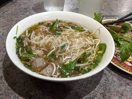

Pho

Description
Pho is a soup consisting of bone broth, rice noodles, thinly-sliced meat (in this recipe, it's beef), and fresh garnishes.
Ingredients
- Beef Soup Bones
- Pho Noodles
- Beef (Sirloin, Filet, or any other)
- Fish Sauce
- Onion
- Spices and Seasonings
- Garnishes
Directions
- Roast the beef bones and onions until the bones are browned and the onions are soft.
- Combine roasted beef bones, roasted onions, ginger, salt, star anise, fish sauce, and water in a large stockpot. Allow to simmer for 6 to 10 hours. Then, strain the broth into a new saucepan.
- Allow dry rice noodles to soak for 1 hour. While they're soaking, bring broth to a simmer.
- Cook the rice noodles in boiling water. Drain and add noodles to a bowl topped with sirloin, cilantro, green onion, and broth. Garnish with your desired toppings.